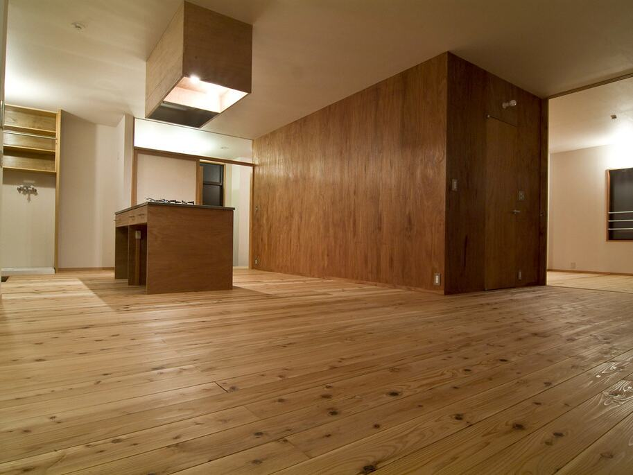

愛媛の不動産・建物事業者向け
2つの相談窓口
ご用件に合わせて、窓口をお選びください。どちらも、いつものお取引先を変えていただく必要はありません。

愛媛修繕デスク
いつもの施工会社が手いっぱいの時や、対応できる工種がない時の第二施工店。管理会社様・買取再販事業者様・店舗や施設の運営者様向けです。
愛媛修繕デスクを見る
売却前おまかせデスク
残置物・清掃・草刈り・小修繕など、売却前の面倒な手配をまとめてご相談いただけます。
売却前おまかせデスクを見る写真はイメージです。協力事業者の募集についてはこちらをご覧ください。